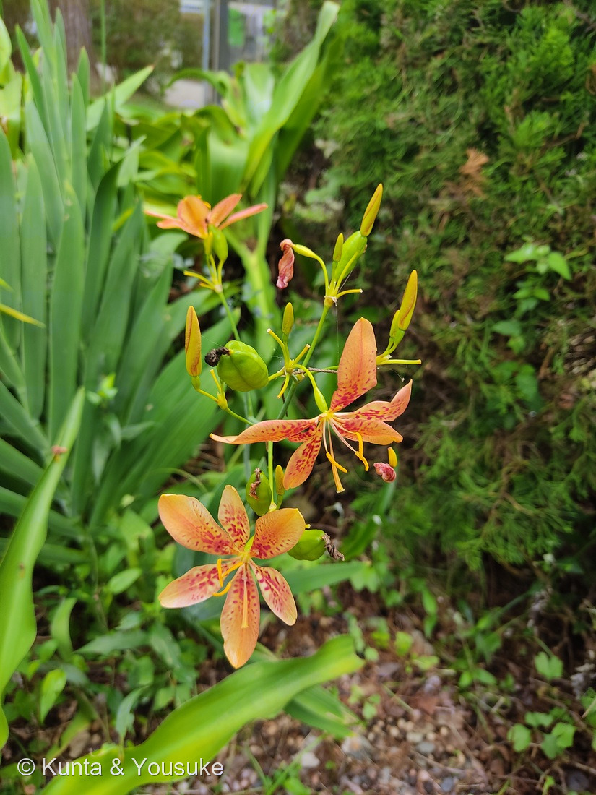

地図を読み込んでいるよ…
🔍 写真も地図も、押しているあいだ拡大して見られるよ（スマホは指を置いてすこし待ってね）。
🌍 の地図＝この子がもともと自生している場所を緑に。東アジア〜南アジア（日本・朝鮮・中国・インドなど）。日本では本州以南の海岸・山地の日当たりのよい草地に自生。
⭐東アジア〜南アジアが原産——ヒオウギは日本（本州以南）・朝鮮・中国・インドなどの草地に自生する在来種だよ。⭐だから日本も塗っている——外来の園芸種とちがって、ヒオウギは日本もふるさと（海岸や山地の日当たりのよい草地）。⚠地図は国ごと塗っているけど、もとはその一部の地域だよ。
⚠ 地図は国（日本と中国だけ県・省）までしか塗れないから、ほんとうの分布より広く見えていることがあるよ。地図はだいたいの場所。正確なところは、上の文を見てね。
ヒオウギ（檜扇）
Iris domestica (L.) Goldblatt & Mabb. （旧 Belamcanda chinensis）
別名 · カラスオウギ／射干（漢名）／ぬばたま（黒い種子）／ 原産 · 東アジア〜南アジア／ 見どころ · ⭐赤斑の花・扇状の葉・黒い種“ぬばたま”・射干の名のもとの持ち主
アヤメ科 · Iridaceae（アヤメ属 Iris・旧ヒオウギ属 Belamcanda）── 053 シャガ・123 ジャーマンアイリス・088 イキシアと同じアヤメ科
名前と学名の由来 ── 扇の葉、射干、ぬばたま
- ⭐和名ヒオウギ（檜扇）＝剣のような葉が、根もとから扇のように平たく重なって出る姿を、昔の宮中で使われた檜（ひのき）の薄板を綴じた扇「檜扇」に見立てたもの。
- ⭐学名 Iris（イリス）＝ギリシャ神話の虹の女神（アヤメ科の花色の多彩さから）。domestica＝ラテン語で「家庭の・栽培の」。かつては別属 Belamcanda chinensis（chinensis＝中国の）だったが、DNA解析でアヤメ属 Iris に移された。
- ⭐漢名は「射干（しゃかん／やかん）」。じつはこの名が、のちに別の花に借りられて「シャガ」と読まれるようになった → 053 シャガ（答え合わせは下の節で）。
- ⭐種子の名「ぬばたま（射干玉・烏羊玉）」＝秋にできる真っ黒な丸い種。和歌の枕詞「ぬばたまの」が「夜・黒・髪・夢」にかかるのは、この黒い種の色から来ているんだ。
この植物のこと
- アヤメ科の多年草。日本の本州以南の海岸・山地の、日当たりのよい草地に自生する（東アジア〜南アジアに広く分布）。
- ⭐花はオレンジ地に赤い斑点。花被片は6枚（外3・内3がほぼ同じ形）で、平らに開く。燻太さんの言う「花弁と萼の模様が印象的」は、この赤い斑点だね。
- ⭐花は1〜2日の短いいのち。しぼむときは、くるくるとねじれて巻き上がる（写真にも、ねじれてしぼんだ花が写っている）。次々に新しい花を咲かせる。
- ⭐葉は剣状で、扇のように平面的に並ぶ（左右から交互に重なる「単面葉」＝アヤメ科の特徴）。これが「檜扇」の名のもと。
- 秋、緑のさく果（写真の緑の実）が熟して割れると、黒く光る種子（ぬばたま）が現れ、冬までぶら下がる。
- 根茎は生薬「射干（やかん）」＝のどの炎症などに使われてきた。京都では、祇園祭に厄除けとしてヒオウギを飾る風習があるよ。
同定について
- オレンジ＋赤い斑点の6花被片・剣状で扇状に並ぶ葉・緑のさく果——これで、ヒオウギ（Iris domestica）で確定。燻太さんの見立てどおりだよ。
- 似た子との見分け：おまけのヒメヒオウギズイセン（クロコスミア）は、名前に「ヒオウギ」が入り葉も扇状だけど、別属で花がずっと小さく穂状。オレンジ色のユリ類は葉の付き方がまるでちがう。ヒオウギは葉が扇状に平らに並ぶのが決め手。
⭐ 射干（しゃが）の名の、答え合わせ
053 シャガを登録したとき、こう書いたんだ——「『射干（しゃかん）』は、もともと別の花＝ヒオウギ（檜扇）の漢名だった。それがこの花（シャガ）に借りられた」。そして053のおまけを「ヒオウギ＝“射干”という名のもとの持ち主」にして、「夏に会えたら、名前のなぞの答え合わせをしようね」と約束していた。
⭐今日、その“もとの持ち主”に会えたよ。 射干という名は、まずこのヒオウギのものだった。それが、葉の姿が似た別のアヤメ科の花に貸し出されて、「シャガ」になった。名前は、旅をするんだね。
そして、この子自身も、種の名「ぬばたま」で、千年前の和歌の中に生きている。射干（しゃが）・檜扇・ぬばたま——ひとつの草が、三つの名前で、日本の言葉の中を旅してきた。
参考：Wikipedia「ヒオウギ」（アヤメ科・旧Belamcanda→Iris domestica／檜扇の名は扇状の葉／黒い種子=ぬばたま・枕詞／漢名射干→シャガに転用／祇園祭の厄除け）